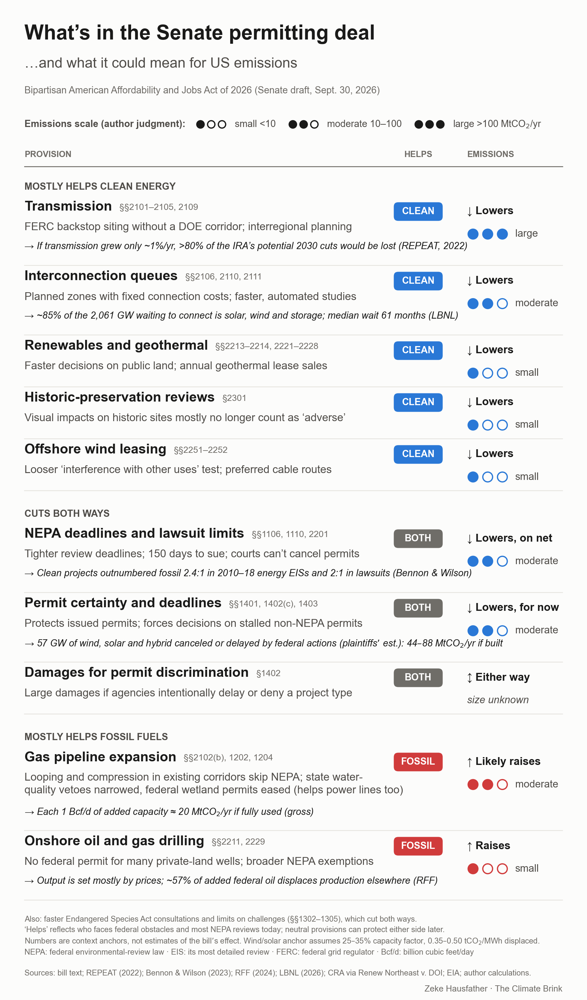

A provision-by-provision scorecard of the Bipartisan American Affordability and Jobs Act of 2026: who each part helps today, and the likely direction and rough scale of its effect on US emissions.
| Provision | What it does | Helps | Emissions |
|---|---|---|---|
| Mostly helps clean energy | |||
| Transmission§§2101–2106, 2109 | FERC backstop siting without a DOE corridor; interregional planning → If transmission grew only ~1%/yr, >80% of the IRA’s potential 2030 cuts would be lost (REPEAT, 2022) source | CLEAN | ↓ Lowerslarge |
| Renewables and geothermal§§2213–2214, 2221–2228 | Faster decisions on public land; annual geothermal lease sales | CLEAN | ↓ Lowerssmall |
| Historic-preservation reviews§2301 | Visual impacts on historic sites mostly no longer count as ‘adverse’ | CLEAN | ↓ Lowerssmall |
| Offshore wind leasing§§2251–2252 | Looser ‘interference with other uses’ test; preferred cable routes | CLEAN | ↓ Lowerssmall |
| Cuts both ways | |||
| NEPA deadlines and lawsuit limits§§1106, 1110, 2201 | Tighter review deadlines; 150 days to sue; courts can’t cancel permits → Clean projects outnumbered fossil 2.4:1 in 2010–18 energy EISs and 2:1 in lawsuits (Bennon & Wilson) source | BOTH | ↓ Lowers, on netmoderate |
| Permit certainty and deadlines§§1401, 1402(c), 1403 | Protects issued permits; forces decisions on stalled non-NEPA permits → 57 GW of wind, solar and hybrid canceled or delayed by federal actions (plaintiffs’ est.): 44–88 MtCO₂/yr if built source | BOTH | ↓ Lowers, for nowmoderate |
| Damages for permit discrimination§1402 | Large damages if agencies intentionally delay or deny a project type | BOTH | ↕ Either wayunknown |
| Mostly helps fossil fuels | |||
| Gas pipeline expansion§§2102(b), 1202, 1204 | Looping and compression in existing corridors skip NEPA; state water-quality vetoes narrowed, federal wetland permits eased (helps power lines too) → Each 1 Bcf/d of added capacity ≈ 20 MtCO₂/yr if fully used (gross) source | FOSSIL | ↑ Likely raisesmoderate |
| Onshore oil and gas drilling§§2211, 2229 | No federal permit for many private-land wells; broader NEPA exemptions → Output is set mostly by prices; ~57% of added federal oil displaces production elsewhere (RFF) source | FOSSIL | ↑ Raisessmall |
The same table as a CSV file, one row per provision. Please credit Zeke Hausfather, The Climate Brink.
